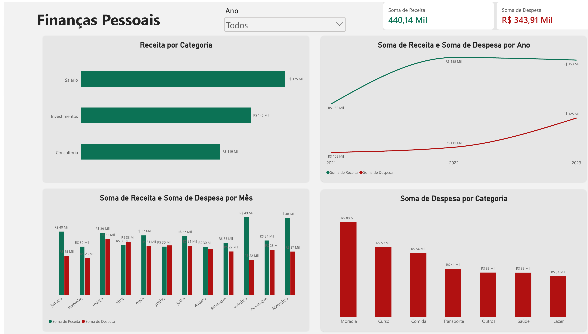
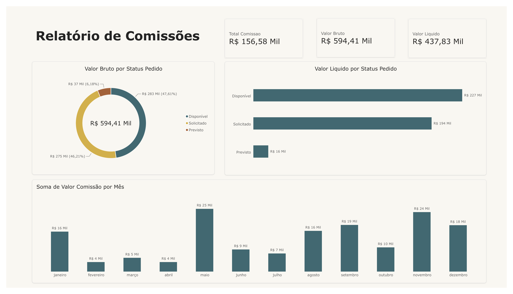
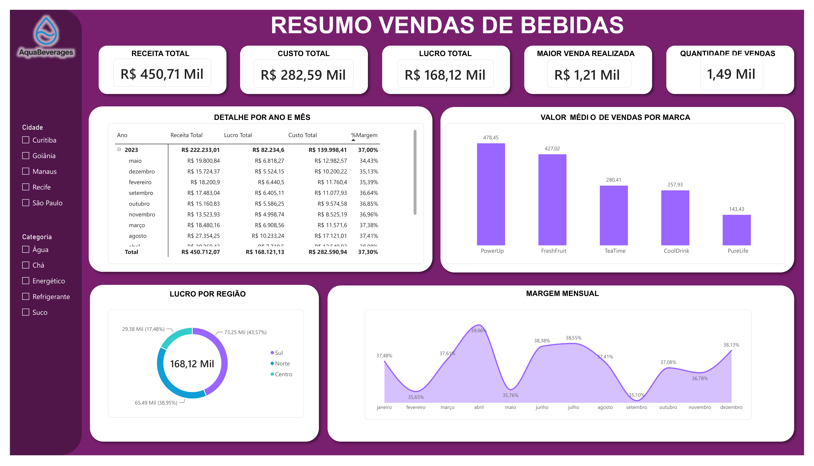

Análise e Desenvolvimento de Sistemas
Centro Universitário UNA — UNA
Estou iniciando minha trajetória na área de Dados e desenvolvendo conhecimentos por meio de estudos e projetos práticos em Power BI, análise e visualização de dados.
Estou iniciando minha trajetória na área de Dados e desenvolvendo meus conhecimentos em Power BI e Business Intelligence por meio de cursos, imersões e projetos práticos.
Este portfólio reúne minha evolução em análise de dados, tratamento de informações, criação de indicadores, visualização de dados e construção de dashboards.
Meu objetivo é aprender continuamente e transformar dados em informações que possam apoiar análises e decisões de negócio.
Centro Universitário UNA — UNA
SENAI
Projetos práticos desenvolvidos durante minha jornada de aprendizado em Dados e Business Intelligence.

Projeto prático com tratamento e organização dos dados e construção de um relatório para acompanhar receitas e despesas.

Projeto prático de análise de comissões, com tratamento dos dados e criação de indicadores e visualizações.

Projeto desenvolvido com dados de Excel e TXT, incluindo tratamento das bases, criação do relatório e aplicação de um tema visual personalizado da empresa.
Uma trajetória construída por meio de estudos e aplicação prática dos conhecimentos.
Início dos estudos na área de Dados e Business Intelligence.
Desenvolvimento de conhecimentos em Power BI, criação de dashboards e visualização de dados.
Aprendizado sobre tratamento, transformação e preparação dos dados.
Desenvolvimento de conhecimentos para criação de métricas e análises no Power BI.
Aplicação dos conhecimentos em projetos e atividades práticas.
Conhecimentos que estão sendo construídos e aplicados nos projetos.
Organização, transformação e preparação de bases para análise.
Construção e acompanhamento de indicadores para apoiar análises.
Criação de visualizações organizadas para facilitar a interpretação dos dados.
Desenvolvimento de conhecimentos sobre organização e relacionamento dos dados.
Tratamento e transformação de dados dentro do Power BI.
Desenvolvimento de medidas e análises para os relatórios.